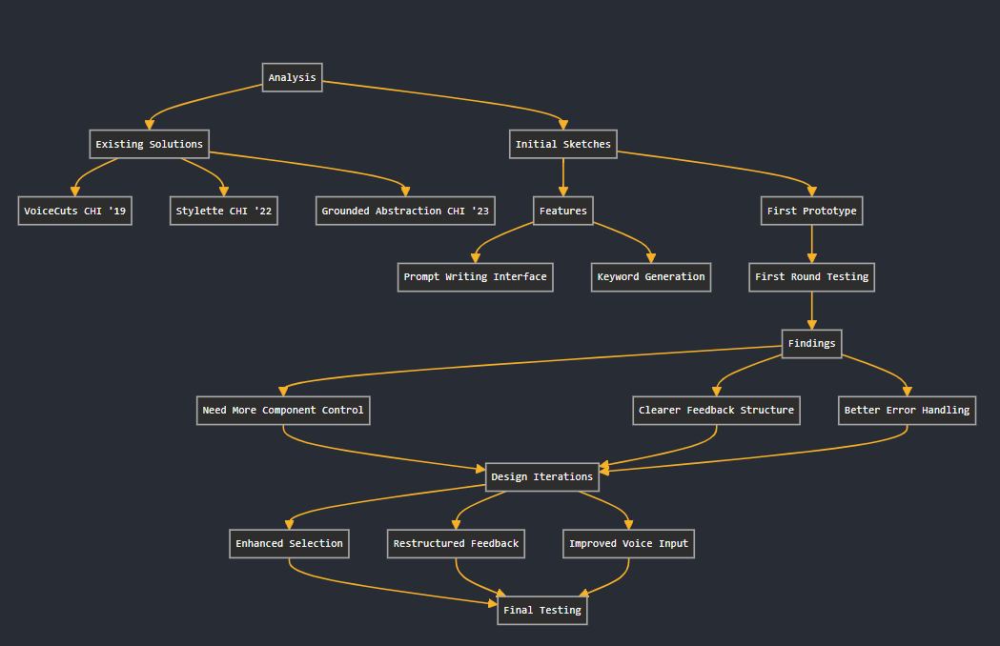

Project Overview
Natural Language Input (NLI) explores how users can effectively interact with AI systems through natural language, focusing on improving the fine-tuning process of Large Text and Graphics Models (LTGM). Our research investigates ways to bridge the gap between user intent and system output while making the interaction more intuitive and efficient.
Key Challenges
Ambiguous Natural Language
Users struggle to express their intents in ways that AI systems can accurately interpret, leading to misaligned outputs and frustration.
Alignment Problem
There's often a disconnect between high-level user goals and the specific, executable actions of the computer system.
Black Box Problem
Users without domain-specific knowledge struggle to understand system mechanisms and formulate effective queries.
Research Process
Our research combined analysis of existing solutions like VoiceCuts [CHI '19], Stylette [CHI '22], and Grounded Abstraction Matching [CHI '23] with our own user studies and prototyping.

Key Research Insights
- Users benefit from natural language feedback that explains system interpretation
- Component selection helps users specify intent during fine-tuning
- Vocal input can be effectively translated into specific, executable commands
View full research presentation here :
Research PresentationOur Solution
Component Selection
Allows users to select specific parts of generated content they want to keep or modify, making the fine-tuning process more intuitive.
Vocal Input Translation
Translates natural language utterances into specific, executable commands that the system can understand and act upon.
Natural Language Feedback
Provides clear feedback about how the system interprets user inputs, helping users build a better mental model of the system.
Impact & Future Directions
Our research demonstrates that by combining component selection, vocal input, and natural language feedback, we can create more intuitive and effective ways for users to fine-tune AI system outputs. Future work will focus on:
- Expanding prompt engineering capabilities
- Improving system understanding as complexity increases
- Developing more sophisticated natural language translation mechanisms
Design Process
Initial Sketches
- Produces low-level keywords from high-level interactions
- Provides faster, more intuitive way to generate/remove images
- Suggests new considerations for exploring diverse aspects
- Incorporates negative prompting for better image styles
Improved Sketches
- Image component selection for keeping desired elements
- Natural language feedback for system understanding
- Vocal feedback integration for immediate adjustments
Final Prototype
Combined approach featuring:
- Component selection for precise control
- Vocal input translation
- Natural language feedback system
User Testing & Iterations
First Round Testing
Key findings:
- Users wanted more control over specific components
- Natural language feedback needed clearer structure
- Vocal input required better error handling
Iterations
Improvements made:
- Enhanced component selection interface
- Restructured feedback presentation
- Improved vocal input recognition
Final Testing
Results:
- Increased user confidence in system interaction
- Better understanding of system capabilities
- More efficient fine-tuning process
Technical Implementation
Natural Language Processing
Implementation details for converting user input into system commands
Component Selection System
Technical architecture for interactive selection and modification
Feedback Generation
System for generating clear, actionable feedback
Research Deep Dive
Related Work Analysis
Our research built upon several key papers:
- VoiceCuts [CHI '19] - Voice input for creative applications
- Stylette [CHI '22] - Natural language for web styling
- Grounded Abstraction Matching [CHI '23] - Bridging abstraction gaps
Novel Contributions
Our work extends existing research by:
- Combining vocal input with component selection
- Implementing real-time natural language feedback
- Creating a more intuitive fine-tuning process
Technical Deep Dive
System Architecture
Natural Language Processing
Component Selection System
System in Action
Example Use Cases
User Input
"Generate a photograph of a cat, but make it more playful and add some toys"
System Response
User Input
"Make the lighting more dramatic and increase contrast"